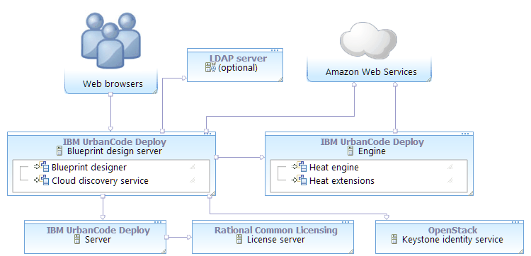

Connecting to Amazon Web Services
To connect to Amazon Web Services (AWS), you must provide AWS account information in a functional ID. You must also register Amazon Elastic Compute Cloud (EC2) images with the cloud discovery service.
The following diagram shows a typical topology for this scenario. The blueprint design server and engine connect to Amazon Web Services. For authentication information, the blueprint design server connects to the Keystone identity service and optionally to an LDAP server.
- Connecting the blueprint design server to Amazon Web Services
To connect the blueprint design server to Amazon Web Services (AWS), map the AWS account information to a functional ID. Then, assign that functional ID to a team. - Registering Amazon EC2 images with the cloud discovery service
To use the blueprint designer to model environments on Amazon Web Services, you must register Amazon Elastic Compute Cloud (EC2) images with the cloud discovery service.
Parent topic: Connecting to clouds through the blueprint designer